Mooncake Store Deployment Guide#
This guide shows how to bring up a minimal Mooncake Store deployment and where to tune production settings.
Architecture Overview#

Master Service (mooncake_master): The central coordinator. It manages cluster membership, allocates object storage across client nodes, and enforces eviction/placement policies. Runs as a standalone process.
Client Node: Each node contributes DRAM (and optionally VRAM/SSD) to form the distributed cache pool. Clients communicate with the master over RPC for control operations (Put/Get/Remove), but transfer actual data directly between each other via the Transfer Engine — the master is never in the data path.
Metadata Discovery: The Transfer Engine needs peer-discovery metadata before clients can exchange data. The recommended starting point is P2PHANDSHAKE, which stores handshake metadata locally and does not require an external metadata service.
For a detailed design discussion, see the Mooncake Store Design.
Quick Start#
Deploy a minimal single-node TCP Mooncake Store with the P2P metadata handshake. No etcd, Redis, or HTTP metadata service is required.
{kind=link}

Runtime map for the Quick Start path: the master handles control RPC while clients discover peers through the selected metadata handshake and exchange data directly.#
1. Start the Master Service#
mooncake_master
On success the log shows:
Starting Mooncake Master Service
Port: 50051
Max threads: 4
Master service listening on 0.0.0.0:50051
The master’s default RPC port is 50051. This Quick Start does not enable the
embedded HTTP metadata server because clients use P2PHANDSHAKE.
2. Start a Store Client#
Use the Python sample program to bring up a client that contributes 3.2 GB of DRAM to the cluster:
# quickstart_store_client.py
import os
from distributed_object_store import DistributedObjectStore
store = DistributedObjectStore()
store.setup(
local_hostname=os.getenv("LOCAL_HOSTNAME", "localhost"),
metadata_server=os.getenv("METADATA_ADDR", "P2PHANDSHAKE"),
global_segment_size=3200 * 1024 * 1024, # DRAM contributed to the cluster
local_buffer_size=512 * 1024 * 1024, # Transfer Engine buffer
protocol=os.getenv("PROTOCOL", "tcp"),
device_name=os.getenv("DEVICE_NAME", ""),
master_server_address=os.getenv("MASTER_SERVER", "127.0.0.1:50051"),
)
python3 quickstart_store_client.py
What just happened:
The client registered itself with the master via RPC.
The master allocated a 3.2 GB segment on this node and added it to the cluster’s memory pool.
The client is now ready to serve
Put/Get/Removerequests.
3. Verify#
# Health check — master metrics endpoint
curl -s http://localhost:9003/metrics/summary
The client should remain running without registration or transfer-engine setup errors.
Stress Benchmark#
Mooncake Store includes sample programs for validating C++ and Python integrations. The stress benchmark script can be used to verify a two-role prefill/decode setup after the master is running.
Configure the script for your network:
local_hostname: the local machine’s reachable IP address or hostname.metadata_server: the Transfer Engine metadata service, for exampleP2PHANDSHAKE,http://127.0.0.1:8080/metadata, or an etcd address.master_server_address: the Mooncake Store master address. UseIP:Portin default mode, oretcd://IP:Port;IP:Port;...;IP:Portin etcd-backed HA mode.
Then start the roles:
ROLE=prefill python3 mooncake-store/tests/stress_cluster_benchmark.py
ROLE=decode python3 mooncake-store/tests/stress_cluster_benchmark.py
For RDMA, topology auto-discovery and NIC filters can be passed through environment variables:
ROLE=prefill MC_MS_AUTO_DISC=1 MC_MS_FILTERS="mlx5_1,mlx5_2" python3 mooncake-store/tests/stress_cluster_benchmark.py
ROLE=decode MC_MS_AUTO_DISC=1 MC_MS_FILTERS="mlx5_1,mlx5_2" python3 mooncake-store/tests/stress_cluster_benchmark.py
The absence of errors indicates successful data transfer.
Metrics Endpoints#
The master exposes Prometheus-style metrics on --metrics_port:
# Prometheus format
curl -s http://<master_host>:9003/metrics
# Human-readable summary
curl -s http://<master_host>:9003/metrics/summary
Next Steps#
Compose Commands and Runtime Modes#
Use the Configuration Reference for the
master command builder, standalone Real Client deployment modes, startup flags,
and client/engine environment variables. Common first adjustments are
--rpc_thread_num, eviction watermarks, and storage-related flags.
Add Storage Backends#
Choose a storage guide when the in-memory quick start is not enough:
SSD Offload: local SSD capacity, eviction policy, and io_uring settings.
NVMe-oF SSD Pool: remote NVMe-oF SSD pool deployment.
3FS USRBIO Plugin: experimental 3FS-backed persistent storage.
Validate and Observe#
Use Stress Benchmark for two-role prefill/decode validation.
Observability: metrics collection and production monitoring.